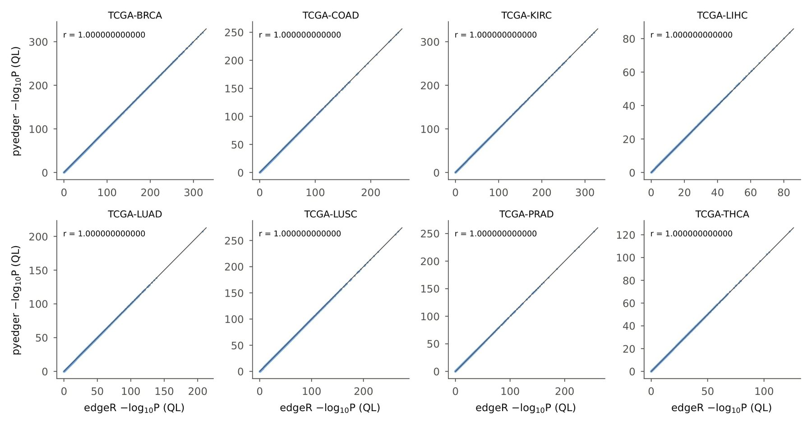

pyedger: a Python implementation of edgeR for differential expression analysis
Affiliations
- 1 Department of Genetics, Stanford University, Stanford, CA 94305, USA
- 2 OmicVerse, Inc., San Francisco, CA 94114, USA
- 3 Hubei Key Laboratory of Agricultural Bioinformatics, College of Informatics, Huazhong Agricultural University, Wuhan 430070, China
- 4 School of Chemistry and Biological Engineering, University of Science and Technology Beijing, Beijing 100083, China
- 5 Daxing Research Institute, University of Science and Technology Beijing, Beijing 100083, China
OmicVerse Technical Reports (2026)Cite this article
Download PDFAbstract
We present pyedger, a Python implementation of the edgeR workflow for differential expression analysis of count data, covering TMM normalisation, filterByExpr, dispersion estimation, the quasi-likelihood (QL) F-test, the likelihood-ratio test and the classic exact test. pyedger follows edgeR's compiled code and its limma and locfit dependencies step by step and is versioned against a specific edgeR release. On eight TCGA tumour–normal comparisons (4,972 samples) and 60 small-sample analyses it returns the same differentially expressed genes as edgeR 4.10.5 in all three tests, P-values within a relative difference of 1.2 × 10⁻⁵ and identical gene-set enrichment results, while running 1.1–1.3 times faster than edgeR on one thread and 3.4–3.5 times faster on eight. pyedger is the edgeR backend of OmicVerse and is released under LGPL-3.0-or-later at https://github.com/omicverse/py-edgeR and on PyPI.
- edgeR
- differential expression
- RNA-seq
- negative binomial
- Python
- reproducibility
Introduction
Differential expression (DE) analysis is the most common use of RNA-seq data1, and edgeR2,3 is one of the most widely used methods for it. edgeR models counts with negative-binomial generalised linear models (GLMs), shares information between genes through empirical-Bayes estimation of the dispersions4, and its quasi-likelihood (QL) F-test5,6 gives reliable error-rate control even with few replicates. edgeR 4 revised the QL method to improve its handling of small counts and large data sets3.
Omics analysis is increasingly done in Python. Single-cell and spatial workflows are built on scanpy and the scverse ecosystem7,8, and OmicVerse9 brings bulk, single-cell and spatial analyses together in one Python framework. Bulk and pseudobulk DE is a routine step in these workflows, but edgeR is available only in R.
Python users currently reach edgeR through rpy210. This requires a parallel R installation, converts data between the two languages at every call and exposes edgeR's options only through the binding layer. A native implementation removes all three costs, as PyDESeq211 has shown for DESeq212. We set a specific target for pyedger: an analysis in Python should return the same genes, the same P-values and the same pathways as the same analysis in R.
Here we present pyedger, a Python implementation of edgeR's count-based DE workflow that is versioned against a specific edgeR release and reproduces its results to numerical precision. We describe its implementation and compare it with edgeR 4.10.5 on eight TCGA cohorts and 60 small-sample analyses.
Implementation
Statistical model
edgeR models the counts of each gene with a negative-binomial distribution. The mean is the product of the library size, scaled by a normalisation factor such as TMM13, and a gene-wise expression level that depends on the experimental design through a log-linear model; the dispersion describes the biological variation of the gene between replicates. Gene-wise dispersions are estimated by Cox-Reid adjusted profile likelihood14 and moderated towards a common or abundance-dependent trend by weighted-likelihood empirical Bayes4,15. For two-group comparisons, the classic exact test is computed on quantile-adjusted pseudo-counts16. For general designs, a GLM is fitted to each gene and its coefficients are tested by a likelihood-ratio test or by the QL F-test, which adds a gene-wise QL dispersion moderated by limma's empirical-Bayes procedure5,17.
Features and code structure
pyedger 0.2.3 implements this workflow as in edgeR 4.10 (Table 1): the DGEList container; TMM, TMMwsp, RLE and upper-quartile normalisation; filterByExpr, cpm and aveLogCPM; common, trended and tagwise dispersion estimation with or without a design matrix, including robust dispersions; GLM fitting with the likelihood-ratio test and glmTreat; the classic exact test; and the QL pipeline in both its legacy form and the form introduced in edgeR 43. Every function is exported under a Python name (estimate_disp) and its R name (estimateDisp), so an edgeR script translates line by line. pyedger builds on NumPy18 and SciPy19, returns results as pandas20 data frames with edgeR's column names, and uses numba21 to compile the GLM and QL kernels, which process genes in blocks on a thread pool and give bit-identical results for any number of threads.
| edgeR | pyedger | Largest difference from edgeR 4.10.5 on TCGA |
|---|---|---|
| normLibSizes | calc_norm_factors | norm. factors $4.9 \times 10^{-15}$ |
| filterByExpr | filter_by_expr | same genes kept |
| aveLogCPM | ave_log_cpm | $5 \times 10^{-12}$ |
| estimateDisp | estimate_disp | tagwise dispersion $8.6 \times 10^{-10}$ |
| glmFit, glmLRT | glm_fit, glm_lrt | P-value $3.8 \times 10^{-7}$ |
| glmQLFit, glmQLFTest | glm_ql_fit, glm_qlf_test | P-value $1.2 \times 10^{-5}$ |
| exactTest | exact_test | P-value $5.1 \times 10^{-8}$ |
Numerical parity with edgeR
Much of edgeR's numerical work happens in compiled code and in two other packages: limma17 estimates the empirical-Bayes hyper-parameters and locfit22 fits the dispersion trend. pyedger ports each of these code paths instead of re-deriving the statistics: edgeR's Levenberg-damped GLM fit and its one-way shortcut, the Cox-Reid adjusted profile likelihood, the handling of genes with zero counts in a whole group, the adaptive locfit tree with vertex interpolation, limma's squeezeVar family including its robust variant23, and R's Brent optimize and uniroot. The gamma tail probabilities in q2qnbinom are evaluated on the log scale, which keeps the exact test accurate for genes with very large fold changes; on 2,000 extreme inputs pyedger matches edgeR's pseudo-counts to $10^{-8}$. Each step is tested against reference output of edgeR 4.10.5, limma 3.68.5 and locfit 1.5-9.12 (42 tests), and pyedger versions follow edgeR releases (0.2.x tracks edgeR 4.10.5).
Performance
Dispersion estimation dominates the run time: estimateDisp evaluates the adjusted profile likelihood of every gene at 21 dispersion values. pyedger computes the group sub-matrices, $e^{\text{offset}}$, $\log\Gamma(y+1)$ and the other dispersion-independent terms once for the whole grid, updates the fitted means as $e^{\beta}e^{\text{offset}}$ in each Newton step, and leaves out the deviance, which the grid search does not use. Together with block-wise parallelism over genes, this makes pyedger faster than edgeR on a single thread and several times faster on multiple threads.
Use in OmicVerse
pyedger is the edgeR backend of OmicVerse9: ov.bulk.pyDEG runs the QL pipeline with deg_analysis(..., method='edger') and the likelihood-ratio test with method='edgepy', and OmicVerse's implementation of Milo24 uses pyedger to test differential abundance on neighbourhood counts.
Comparison with edgeR on TCGA
Data and design
We compared primary tumours with solid-tissue normal samples in eight TCGA projects25 (BRCA, COAD, KIRC, LIHC, LUAD, LUSC, PRAD and THCA), using STAR gene counts from the UCSC Xena GDC hub26 with one aliquot per participant (421 to 1,208 samples per cohort, 4,972 in total). To cover the small-sample designs in which edgeR is most often used, we also drew 20 random subsets each of 3, 5 and 10 normal samples versus as many tumours from TCGA-LUAD. Both packages ran the default edgeR pipeline: filterByExpr, TMM normalisation and estimateDisp with design ~group, followed by the QL F-test (glmQLFit, glmQLFTest), the likelihood-ratio test (glmFit, glmLRT) and the exact test (exactTest). Between 22,730 and 27,801 genes were retained per cohort, and genes were called DE at FDR ≤ 0.05 and $|\log_2 \text{FC}| \ge 1$. We compared four criteria: DE calls, gene-set enrichment, the numerical agreement of the statistics and run time (Supplementary methods).
Differential expression and pathways
Across the eight cohorts edgeR's QL F-test called 61,578 DE genes, and pyedger's calls were identical in every cohort (Fig. 1a). The likelihood-ratio test and the exact test also gave identical calls, and the $-\log_{10}P$ values of the two packages lie on the identity line (Fig. S1). Gene-set enrichment with fgsea27 on the MSigDB Hallmark collection28 gave identical calls for all 400 cohort-pathway pairs (257 significant), with normalised enrichment scores (NES) differing by at most $2.5 \times 10^{-8}$, far below fgsea's own seed-to-seed variation (Fig. 1b).
Numerical agreement and speed
The statistics agree to the precision of edgeR's own numerics (Table 1, Fig. 1c). Normalisation factors, the common dispersion and the empirical-Bayes prior degrees of freedom agree to $5.6 \times 10^{-10}$ or better. Per gene, log-fold changes differ by at most $3.3 \times 10^{-8}$, and P-values of the exact and likelihood-ratio tests by at most $5.1 \times 10^{-8}$ and $3.8 \times 10^{-7}$ in relative terms. QL P-values agree within $1.2 \times 10^{-5}$ (median $3.7 \times 10^{-9}$), the tolerance of the optimiser that edgeR's QL fit uses for its dispersion. In the 60 small-sample analyses the largest relative P-value difference was $1.3 \times 10^{-6}$, and all DE calls were identical (Fig. 1e).
pyedger ran the full pipeline 1.1 to 1.3 times faster than edgeR on one thread and 3.4 to 3.5 times faster on eight threads; edgeR itself runs on one thread (Fig. 1d). For TCGA-BRCA, the largest cohort (1,208 samples), edgeR took 351 s, and pyedger 277 s on one thread and 102 s on eight.
Conclusion and future perspectives
pyedger brings edgeR's count-based DE workflow to Python with results that match edgeR to numerical precision. On eight TCGA cohorts of 421 to 1,208 samples and on 60 small-sample analyses it returns the same DE genes and pathways as edgeR 4.10.5 in all three tests, and it runs faster than edgeR on one thread and several times faster on eight. Because pyedger works on pandas data frames and is part of OmicVerse, edgeR analyses can run in the same Python session as the rest of a bulk, single-cell or spatial workflow.
Future work includes the parts of edgeR beyond count-based DE: differential splicing (diffSpliceDGE), the gene-set tests camera, roast and goana, the bisulfite methylation helpers and the plotting functions. pyedger will continue to follow edgeR releases, with each version pinned to the edgeR release it reproduces.
Data and code availability
pyedger is released under LGPL-3.0-or-later on PyPI (pip install pyedger) and at https://github.com/omicverse/py-edgeR; this report describes version 0.2.3. The benchmark (report/scripts in the repository) reproduces every number and figure in this report. TCGA STAR counts were obtained from the UCSC Xena GDC hub (https://gdc-hub.s3.us-east-1.amazonaws.com) and MSigDB Hallmark 2020 gene sets from Enrichr, both accessed on 9 November 2026. Software: pyedger 0.2.3 (Python 3.10, NumPy 2.2.6, SciPy 1.15.2, numba 0.67.0); edgeR 4.10.5, limma 3.68.5, locfit 1.5-9.12 and fgsea 1.36.2 on R 4.5.3 (bioconda). Hardware: one node of the Stanford Sherlock cluster (Intel Xeon Platinum 8462Y+, 20 cores allocated).
Declaration of generative AI and AI-assisted technologies
The authors used Claude Opus 5.5, GPT-6 Astra, and OmicOS to proofread grammar and syntax, improve readability. Any AI-assisted edits were reviewed by the authors, who take full responsibility for the content of this publication.
Conflicts of interest
Z.Z. is affiliated with OmicVerse, Inc. The other authors declare no conflicts of interest.
References
- 1.Stark R, Grzelak M, Hadfield J (2019). RNA sequencing: the teenage years. Nature Reviews Genetics 20, 631-656. 10.1038/s41576-019-0150-2
- 2.Robinson MD, McCarthy DJ, Smyth GK (2010). edgeR: a Bioconductor package for differential expression analysis of digital gene expression data. Bioinformatics 26, 139-140. 10.1093/bioinformatics/btp616
- 3.Chen Y, Chen L, Lun ATL, Baldoni PL, Smyth GK (2025). edgeR v4: powerful differential analysis of sequencing data with expanded functionality and improved support for small counts and larger datasets. Nucleic Acids Research 53, gkaf018. 10.1093/nar/gkaf018
- 4.McCarthy DJ, Chen Y, Smyth GK (2012). Differential expression analysis of multifactor RNA-Seq experiments with respect to biological variation. Nucleic Acids Research 40, 4288-4297. 10.1093/nar/gks042
- 5.Lund SP, Nettleton D, McCarthy DJ, Smyth GK (2012). Detecting differential expression in RNA-sequence data using quasi-likelihood with shrunken dispersion estimates. Statistical Applications in Genetics and Molecular Biology 11, Article 8. 10.1515/1544-6115.1826
- 6.Chen Y, Lun ATL, Smyth GK (2016). From reads to genes to pathways: differential expression analysis of RNA-Seq experiments using Rsubread and the edgeR quasi-likelihood pipeline. F1000Research 5, 1438. 10.12688/f1000research.8987.2
- 7.Wolf FA, Angerer P, Theis FJ (2018). SCANPY: large-scale single-cell gene expression data analysis. Genome Biology 19, 15. 10.1186/s13059-017-1382-0
- 8.Virshup I, Bredikhin D, Heumos L, et al. (2023). The scverse project provides a computational ecosystem for single-cell omics data analysis. Nature Biotechnology 41, 604-606. 10.1038/s41587-023-01733-8
- 9.Zeng Z, Ma Y, Hu L, et al. (2024). OmicVerse: a framework for bridging and deepening insights across bulk and single-cell sequencing. Nature Communications 15, 5983. 10.1038/s41467-024-50194-3
- 10.Gautier L. rpy2: Python interface to the R language. https://rpy2.github.io
- 11.Muzellec B, Teleńczuk M, Cabeli V, Andreux M (2023). PyDESeq2: a python package for bulk RNA-seq differential expression analysis. Bioinformatics 39, btad547. 10.1093/bioinformatics/btad547
- 12.Love MI, Huber W, Anders S (2014). Moderated estimation of fold change and dispersion for RNA-seq data with DESeq2. Genome Biology 15, 550. 10.1186/s13059-014-0550-8
- 13.Robinson MD, Oshlack A (2010). A scaling normalization method for differential expression analysis of RNA-seq data. Genome Biology 11, R25. 10.1186/gb-2010-11-3-r25
- 14.Cox DR, Reid N (1987). Parameter orthogonality and approximate conditional inference. Journal of the Royal Statistical Society: Series B 49, 1-18. 10.1111/j.2517-6161.1987.tb01422.x
- 15.Robinson MD, Smyth GK (2007). Moderated statistical tests for assessing differences in tag abundance. Bioinformatics 23, 2881-2887. 10.1093/bioinformatics/btm453
- 16.Robinson MD, Smyth GK (2008). Small-sample estimation of negative binomial dispersion, with applications to SAGE data. Biostatistics 9, 321-332. 10.1093/biostatistics/kxm030
- 17.Ritchie ME, Phipson B, Wu D, et al. (2015). limma powers differential expression analyses for RNA-sequencing and microarray studies. Nucleic Acids Research 43, e47. 10.1093/nar/gkv007
- 18.Harris CR, Millman KJ, van der Walt SJ, et al. (2020). Array programming with NumPy. Nature 585, 357-362. 10.1038/s41586-020-2649-2
- 19.Virtanen P, Gommers R, Oliphant TE, et al. (2020). SciPy 1.0: fundamental algorithms for scientific computing in Python. Nature Methods 17, 261-272. 10.1038/s41592-019-0686-2
- 20.McKinney W (2010). Data structures for statistical computing in Python. Proceedings of the 9th Python in Science Conference, 56-61. 10.25080/Majora-92bf1922-00a
- 21.Lam SK, Pitrou A, Seibert S (2015). Numba: a LLVM-based Python JIT compiler. Proceedings of the Second Workshop on the LLVM Compiler Infrastructure in HPC, 1-6. 10.1145/2833157.2833162
- 22.Loader C (1999). Local Regression and Likelihood. Springer, New York. 10.1007/b98858
- 23.Phipson B, Lee S, Majewski IJ, Alexander WS, Smyth GK (2016). Robust hyperparameter estimation protects against hypervariable genes and improves power to detect differential expression. Annals of Applied Statistics 10, 946-963. 10.1214/16-AOAS920
- 24.Dann E, Henderson NC, Teichmann SA, Morgan MD, Marioni JC (2022). Differential abundance testing on single-cell data using k-nearest neighbor graphs. Nature Biotechnology 40, 245-253. 10.1038/s41587-021-01033-z
- 25.Cancer Genome Atlas Research Network, Weinstein JN, Collisson EA, et al. (2013). The Cancer Genome Atlas Pan-Cancer analysis project. Nature Genetics 45, 1113-1120. 10.1038/ng.2764
- 26.Goldman MJ, Craft B, Hastie M, et al. (2020). Visualizing and interpreting cancer genomics data via the Xena platform. Nature Biotechnology 38, 675-678. 10.1038/s41587-020-0546-8
- 27.Korotkevich G, Sukhov V, Budin N, Shpak B, Artyomov MN, Sergushichev A (2021). Fast gene set enrichment analysis. bioRxiv. 10.1101/060012
- 28.Liberzon A, Birger C, Thorvaldsdóttir H, Ghandi M, Mesirov JP, Tamayo P (2015). The Molecular Signatures Database hallmark gene set collection. Cell Systems 1, 417-425. 10.1016/j.cels.2015.12.004
Supplementary information
Supplementary methods
Count data. The UCSC Xena GDC hub stores STAR gene counts as $\log_2(\text{count}+1)$; integer counts were recovered by inverting this transform. Samples whose values were averages of replicate aliquots, and therefore not integer counts, were removed, leaving one aliquot per participant.
Small-sample analyses. From TCGA-LUAD, 20 random subsets each of 3, 5 and 10 solid-tissue normal samples and the same number of primary tumours were drawn without replacement within each subset, and the full pipeline was run on each subset with both packages.
Gene-set enrichment. For each full cohort, genes were ranked by $\text{sign}(\log \text{FC})\sqrt{F}$ from the QL F-test, and fgsea was run on the 50 MSigDB Hallmark gene sets (minimum size 15, maximum size 500) once from edgeR's and once from pyedger's statistics with the same seed. Pathways were called enriched at adjusted P ≤ 0.05. To show the scale of fgsea's Monte-Carlo variation, fgsea was also run on edgeR's statistics with a second seed, which changed 8 of the 400 calls and moved NES by up to 0.08 (Fig. 1b, grey).
Run time. Run times are wall-clock times of the full pipeline, from normalisation to all three tests, with one run per cohort and configuration and BLAS pinned to one thread. edgeR and single-threaded pyedger ran as one process per cohort in parallel on the same node, so that both were timed under the same load; pyedger with eight threads then ran one cohort at a time.
Implementation details for bit-level agreement. TMM takes $\log_2$ through the C math library, because NumPy's vectorised $\log_2$ can differ by one unit in the last place and TMM's trimming of heavily tied log-ratios is sensitive to that difference. In the exact test, edgeR keeps negative pseudo-counts, so a group sum can exceed the total and R's s1:s sequence then counts downwards; pyedger reproduces this behaviour.
Notes for users coming from R
- Versions. pyedger 0.2.x tracks edgeR 4.10.5. edgeR 4.2 changed the default QL method, so results from earlier edgeR versions differ from both edgeR 4.10 and pyedger;
glmQLFit(legacy=True)reproduces the classic method. - Indices are 0-based.
glmQLFTest(fit, coef=1)in Python iscoef = 2in R; coefficient names are also accepted. - Subsetting.
y[keep]keeps the original library sizes, as R's default does; the usualy[keep, , keep.lib.sizes = FALSE]afterfilterByExprisy.subset(keep, keep_lib_sizes=False).

Author information
Affiliations
- 1 Department of Genetics, Stanford University, Stanford, CA 94305, USA
- 2 OmicVerse, Inc., San Francisco, CA 94114, USA
- 3 Hubei Key Laboratory of Agricultural Bioinformatics, College of Informatics, Huazhong Agricultural University, Wuhan 430070, China
- 4 School of Chemistry and Biological Engineering, University of Science and Technology Beijing, Beijing 100083, China
- 5 Daxing Research Institute, University of Science and Technology Beijing, Beijing 100083, China
Corresponding authors
Correspondence to Zehua Zeng, Hongwu Du.
Cite this article
Zeng, Z., Xu, M. & Du, H. pyedger: a Python implementation of edgeR for differential expression analysis. OmicVerse Technical Reports (2026). https://omicverse.org/articles/pyedger
@techreport{zeng2026pyedger,
title = {pyedger: a Python implementation of edgeR for differential expression analysis},
author = {Zeng, Zehua and Xu, Meng and Du, Hongwu},
institution = {OmicVerse},
type = {Technical Report},
year = {2026},
url = {https://omicverse.org/articles/pyedger}
}